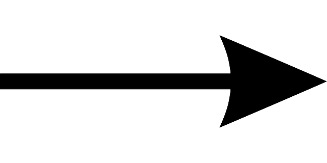
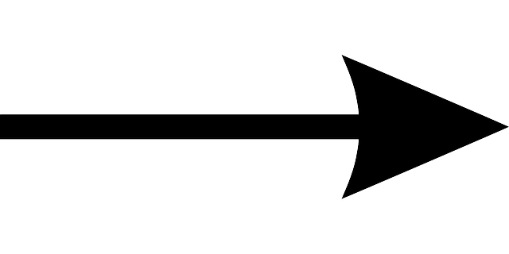
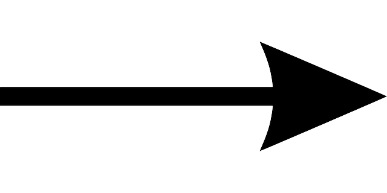

Gravitational waves are ripples in the curvature of spacetime that are seen as waves at the speed of light!
Einstein actually theorized gravitational waves back in 1916 by his Theory of Relativity!
EINSTEIN’S GRAVITY
Gravity is the curvature of spacetime.
matter curves spacetime...
and spacetime tells matter how to move
SO, HOW DOES IT WORK?
The more massive something is, the more it curves spacetime!
GRAVITATIONAL WAVES SOURCES
The strongest gravitational waves
are produced by catastrophic
events such as colliding black
holes, the collapse of stellar
cores (supernovae), or coalescing
neutron stars or white dwarf stars

GRAVITATIONAL WAVES - HOW DO WE FIND THEM?
If we can’t see gravitational waves, then how can weprove that they exist?
It was LIGO that finally foundevidence of gravitational waveson September 14th, 2015!!
LIGO - HANFORD
LIGO - LIVINGSTON
WHAT IS LIGO?
LIGO [The Laser Interferometer Gravitational-Wave Observatory] is the world’s largest gravitational wave observatory and a cutting edge physics experiment.
Comprised of 2 enormous laser interferometers, located thousands of miles apart, that detect gravitational waves!
LIGO – HOW DOES IT ALL WORK?
The main component of LIGO that is in charge of detecting gravitational waves is the Interferometer.
An Interferometer is an L-shaped device that measures tiny changes in length using light
A passing gravitational wave will stretch one arm of the
interferometer relative to the other.
THE ADVANCED LIGO DETECTORS
Initial detectors constructed 1994-2000; collected data 2002-2010 (no detections)
Upgraded 2010 - 2015
Each arm: 4 km (~2.5 miles) in length, maintained at ultra-high vacuum
First operational data run “O1”: Sep 2015 - Jan 2016


 
